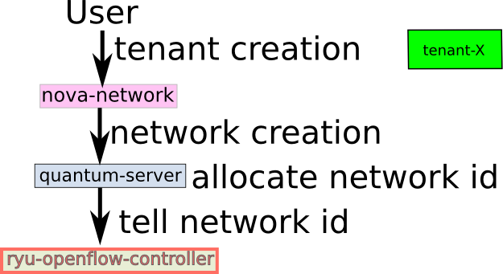
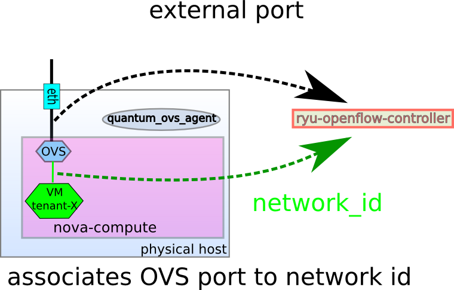

How Ryu L2 segregation works¶
This section describes how Ryu L2 segregation works.
tenant/network id creation¶
When tenant(= network id) is created, Quantum server tells it to Ryu. Ryu remembers the network id.

association OVS port to network id¶
- When VM instance is created, the network port is created in OVS and it is associated to network id that VM belongs to.
- quantum OVS agent tells the associated (network id, ovs port) to Ryu. Ryu remembers (network id, ovs port) relationship.
- quantum OVS agent also tells to Ryu which OVS port is not managed by nova/quantum, but is connected to external ether cable. We call it external OVS port or that the port is external.

mac learing¶
When VM sends packets, Ryu determins network id from OVS port and then associates src mac address to network id.

packet filtering(L2 unicast case)¶
When VM sending L2-unicast packet, Ryu checks if the destination mac address belongs to the same netowrk id of the source mac address which is same to the network id that the OVS port is associated to.
If no, the packet is dropped.
If yes, send the packet is sent to ports which belongs to the same network id and external port.


packet filtering(L2 broadcast case)¶
When VM sending L2-broadcast/multicaset packet, Ryu checks if the source mac address.
send the packet to all external ports and all OVS ports that belongs to the same network id of the source mac address.
When receiving broacast/multicast packet from the external ports, Ryu checks if the source mac address belongs to known network id.
- If yes, send the packet to the external ports except incoming one and the all OVS ports that belongs to the network id
- if no, drop the packet.